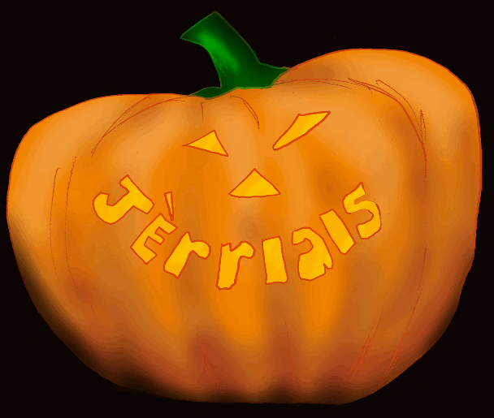

Ach'teu à Halloween, ch'est la couôteunme pouor les mousses - habilyis dans des costumes et des vîsagiéthes dé monstres, dé r'vénants et d'chorchièrs et d'chorchiéthes - dé s'prom'ner siez les vaîthîns à seule fîn d'tcheûter des chucrîns et des chocolats. Ch'est la tcheût'tie dé Halloween – chein qu'nou-s'appelle en Angliais “trick or treat”.
 Ch'est eune couôteunme tchi nos est v'nu d'l'Améthique par l'mouoyen d'films et d'programmes à la télévîsion – mais ch'tait l's Irlandais et l's Êcossais înmigrés en Améthique tch'apportîtent lus vielles couôteunmes Celtiques dans lus nouvieau pays.
Ch'est eune couôteunme tchi nos est v'nu d'l'Améthique par l'mouoyen d'films et d'programmes à la télévîsion – mais ch'tait l's Irlandais et l's Êcossais înmigrés en Améthique tch'apportîtent lus vielles couôteunmes Celtiques dans lus nouvieau pays.
Eh bein, siez nous en Jèrri au dgiêx-neuvième siècl'ye nou soulait tcheûter des sou et d'la fouaille pouor la fouée la séthée d'Guy Fawkes pouor pouver cêlébrer chutte-fête-là. Nou soulait s'prom'ner l'entou d'la pâraîsse, ou du vaîthinné, attriotchant les gens – et en vîsitant les maîsons pouor d'mander des contributions à la fête. En Dgèrnésy étout nou soulait tcheûter pouor Halloween.
Il en 'tait d'même temps pâssé sustout en Irlande à Halloween. Les bedgeurs soulaient vîsiter les maîsons à d'mander des p'tites gâches et à offri d'dithe des priéthes pouor l's âmes des cheins d'la maîson tch'avaient pâssé l'pas. Et en êffet, pus il' èrchévaient d'gâches, pus i' dithaient des priéthes. Ches gâches avaient nom “gâches d'âmes”. Chutte tradition 'tait bein connue étout dans des régions d'l'Angliétèrre au dgiêx-neuvième siècl'ye – j'en avons liu des r'cits entouor la tcheût'tie d'gâches en Staffordshire.
Mais y'avait étout eune aut' crianche tch'est p't-êt' pus vielle. Nous soulait craithe (et ch'est pôssibl'ye qu'i' y'en a tch'y crait acouo) qu'la frontchiéthe entré not' monde et l'monde des esprits 'tait ouvèrte eune séthée dans l'année – la niet dé Halloween. L's esprits des cheins tch'avaient d'pis longtemps patchi ses vailes èrvénaient pouor vaie et vîsiter lus maîsons, lus villages et lus fanmil'yes. Les gens m'ttaient des gâches ou des galettes d'vant lus portes et f'nêt's pouor atchilyi ches esprits-chîn – et pouor s'mêfier du ma qu' ches'-là pouôrrait faithe s'i' n'taient pon d'èrtou d'bouonne heunmeu.
Y'en avait étout tchi criyaient qu'les p'tits faîtchieaux 'taient à banon chutte séthée-là étout – et qu'i' faîthaient toutes sortes dé farches. Les gens lus laîssaient des p'tits présents d'lait, – ou d'vîn - d'pain et des gâches et tout chenna.
Bein seu, y'avait étout des farcheurs du vaîthinné tchi faîthaient sèrvi la séthée pouor jouer lus bouonnes farches – par exempl'ye en m'ttant des lîncheurs pouor êpeûther les pouôrres gens.
 I' sembl'ye qu'la tradition d'la tcheût'tie d'gâches d'âmes et la cheinne des présents offèrts ès r'vénants et p'tits faîtchieaux ont 'té mêlées quand l's Irlandais et l's Êcossais et l's Angliais et touos l's aut's êtablyîtent lus nouvelles commeunautés en Améthique.
Les jannes gens m'nich'chaient lus vaîthîns auve des triques et des farches s'i' n'lus donnaient pon tchique chose à mangi. L'pus souvent nou lanchait d's oeufs (pouôrris, si pôssibl'ye) contre la maîson à tchith'un tchi n'avait rein offèrt.
Nou-s'a raison d'craithe étout qu'les triques et les farches 'taient faites sèrvi coumme eune manniéthe dé justice sociale: chutte séthée-là i' 'tait pèrmîns dé faithe tremblier les membres les mains populaithes d'la commeunauté. Si la frontchiéthe entré les mondes 'tait pus faibl'ye, l'ordre social en 'tait étout.
Don si à Halloween ou ouïyiz tchique brit à la porte, ch'est-i' un bedgeux à tcheûter des gâches d'âmes, des farcheurs, des p'tits faîtchieaux, ou sîmpliément des mousses à tcheûter des chucrîns?
En tout cas, bouonnes gens, n'en v'là-t-i' la tcheût'tie dé Halloween!
Geraint Jennings
Octobre 2001
Viyiz étout: